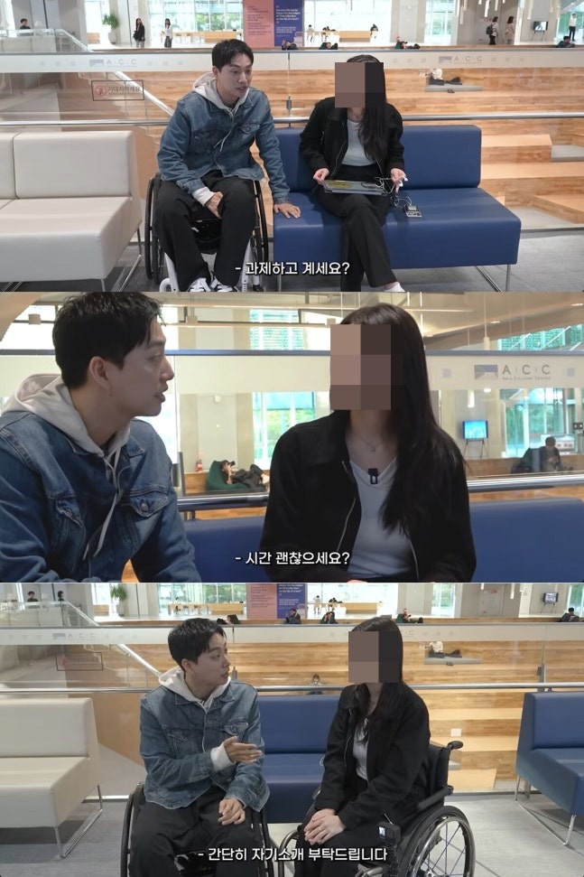
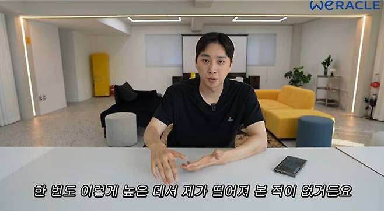

박위 CCTV 논란, 과거 영상까지 다시 주목
박위 CCTV 논란과 함께 위라클의 과거 콘텐츠도 다시 관심을 받고 있어요. 사고 장면 공개와 사과, 별개 영상의 재조명이 한꺼번에 전해지다 보니 이야기가 섞이기 쉬운데요. 어떤 내용이 공개됐고 박위가 무엇을 사과했는지, 과거 영상은 어떤 맥락에서 언급되는지 나눠서 정리해봤습니다.
박위 CCTV 논란, 사고와 영상 공개를 나눠봐요
박위 CCTV 논란의 출발점은 그가 KTX에서 하차하던 중 휠체어에서 떨어지는 사고를 겪은 일이에요. 박위는 자신의 채널 위라클에 사고 당시의 CCTV와 상황을 설명하는 영상을 공개했어요. 하차를 돕는 과정에서 경사로 위에 놓인 근무자의 발에 바퀴가 걸렸다는 설명도 전했고요. 몸이 떨어진 사고 자체와 그 장면을 채널에 공개한 행위는 서로 다른 부분으로 나눠 살펴볼 수 있어요.
박위는 같은 일이 반복되지 않도록 안전교육이 필요하다는 취지를 이야기했어요. 한편 영상 공개 뒤에는 현장에서 도움을 주던 근무자의 실수가 큰 채널을 통해 알려지는 방식이 과도했다는 비판도 나왔고요. 저는 여기서 이동 과정의 안전을 이야기하는 필요성과, 그 일을 어떤 화면과 설명으로 전달했는지에 대한 평가가 함께 존재한다고 느꼈어요. 한쪽 내용만 떼어 읽으면 논란의 이유를 충분히 이해하기 어려워 보여요.
박위 CCTV 논란에 남긴 사과의 내용은요
박위는 영상 공개 뒤 사과문을 올리고 해당 영상을 삭제했어요. 현장에서 자신을 돕기 위해 노력하고 정중하게 사과했던 근무자의 입장을 생각하지 못했다는 내용이 담겼는데요. 도움을 주는 과정에서 생긴 실수를 부정적으로만 받아들였고, 자신의 전달 방식이 미숙했다는 뜻도 밝혔어요. 무엇을 사과했는지 구체적으로 살펴보면 단순히 비판을 받았다는 설명보다 상황을 이해하는 데 도움이 돼요.
사과문이 있었다는 사실과 그 사과를 어떻게 받아들일지는 또 다른 부분이겠죠. 저는 글을 정리하면서 박위가 직접 설명한 내용은 빠뜨리지 않으려고 했어요. 비판만 이어 붙이면 당사자가 무엇을 인정하고 어떤 표현을 했는지 놓치게 되니까요. 동시에 사과가 공개됐다는 이유만으로 모든 쟁점이 정리됐다고 말할 수도 없어요. 사고를 설명한 영상과 사과의 내용을 함께 살펴보는 편이 이 이야기의 흐름을 이해하기 좋겠네요.
다시 언급된 콘텐츠는 별개의 과거 영상이에요
관심이 이어지면서 위라클의 다른 콘텐츠도 재조명됐어요. 그중에는 처음 만난 여성에게 말을 걸고 휠체어 체험과 책 찾기 등을 함께 진행하는 내용의 영상이 있어요. 해당 콘텐츠는 제작진이 제시한 미션을 수행하는 구성이며, CCTV 사고 장면을 담은 영상과는 다른 콘텐츠예요. 재편집된 짧은 영상이 공유되는 과정에서 원래의 제목과 진행 방식도 다시 언급됐어요.
저는 여러 영상이 한꺼번에 이야기될 때 각각을 구분하는 것이 먼저라고 생각해요. 사고에 대한 설명, 제작진과 진행한 미션, 공개된 사과는 같은 채널에 있더라도 성격이 다르잖아요. 과거 영상이 다시 주목받는다는 이유만으로 그 안의 모든 행동에 같은 의도가 있었다고 단정할 수는 없겠죠. 영상의 취지에 공감하는지와 별개로, 누가 어떤 요청을 했고 어떤 내용으로 진행됐는지 맥락을 살펴보고 싶어지는 대목이에요.

공개 목록에서 안 보인다는 말도 구분이 필요해요
관련 콘텐츠 일부가 공개 목록에서 확인되지 않는다는 보도도 이어졌어요. 다만 특정 영상이 검색되지 않거나 보이지 않는다는 사실만으로 모든 영상의 영구 삭제 여부와 변경 이유까지 알 수 있는 것은 아니에요. 공개 상태를 바꾸는 방식에는 차이가 있을 수 있고, 각 영상에 대해 당사자가 따로 설명한 내용도 구분해야 하니까요. 구체적인 근거 없이 삭제 이유를 확정하는 표현은 조심스럽게 느껴져요.
구독자 수 역시 확인 시점에 따라 달라지는 수치예요. 저는 글 하나에 고정된 숫자를 넣고 계속 같은 상태인 것처럼 전하기보다, 영상 공개 방식과 사과의 내용처럼 확인한 핵심을 중심에 두고 싶어요. 관심이 큰 인물의 채널에서는 작은 변화도 큰 의미로 해석되기 쉬워 보이는데요. 그 변화 자체와 변화에 대한 추측을 나눠 읽으면 불필요하게 이야기가 커지는 일을 줄일 수 있을 것 같아요.
비판을 읽더라도 주변 사람의 마음까지 단정하지 않아요
박위와 관련된 논란을 다룬 글에는 배우자나 가족의 이름도 함께 등장해요. 하지만 당사자의 영상 공개 방식을 이야기하는 것과 가족의 관계나 속마음을 판단하는 것은 같은 일이 아니에요. 공개된 몇 장면만 보고 누가 누구를 차별했는지, 어떤 감정을 느꼈는지까지 확정하기는 어렵겠죠. 저는 이 글에서는 사고 설명과 사과, 별개 콘텐츠의 재조명이라는 범위를 중심으로 살펴봤어요.
콘텐츠를 보고 아쉬움을 말할 수는 있지만, 확인하지 못한 동기나 사적인 관계를 덧붙일 필요는 없다고 생각해요. 이번 이야기를 읽을 때도 무엇이 공개됐고 어떤 부분에 사과가 있었는지부터 차근차근 알아보면 좋겠네요. 새로 전한 입장이 있는지, 재조명된 영상의 원래 맥락은 무엇인지 확인할 여지도 남아 있어요. 짧은 제목 여러 개를 하나의 결론으로 묶기보다, 서로 다른 이야기를 나눠 읽어보게 되는 소식입니다.
Q. 박위는 CCTV 영상 공개에 관해 사과했나요?
A. 근무자의 입장을 생각하지 못했고 전달 방식이 미숙했다는 취지로 사과했어요. 문제의 CCTV 공개 영상도 삭제했어요.
Q. 재조명된 여성과의 영상은 KTX 사고 영상인가요?
A. 서로 다른 콘텐츠예요. 재조명된 영상은 제작진이 제시한 미션과 휠체어 체험 등이 담긴 과거 콘텐츠예요.
Q. 보이지 않는 영상은 모두 영구 삭제된 건가요?
A. 공개 목록에서 확인되지 않는다는 사실만으로 전부 영구 삭제됐다고 단정할 수는 없어요. 각 영상의 공개 상태와 변경 이유는 별도 확인이 필요해요.
